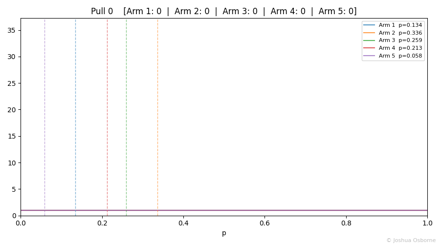
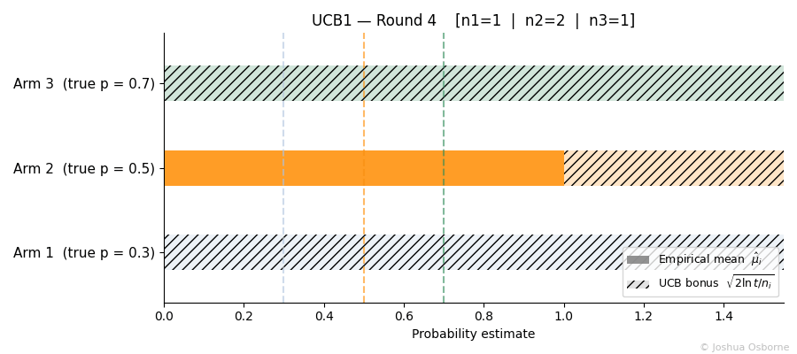
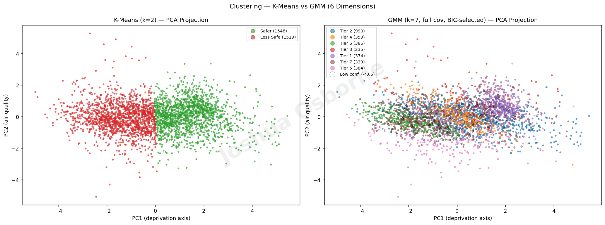
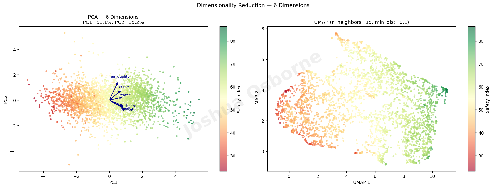
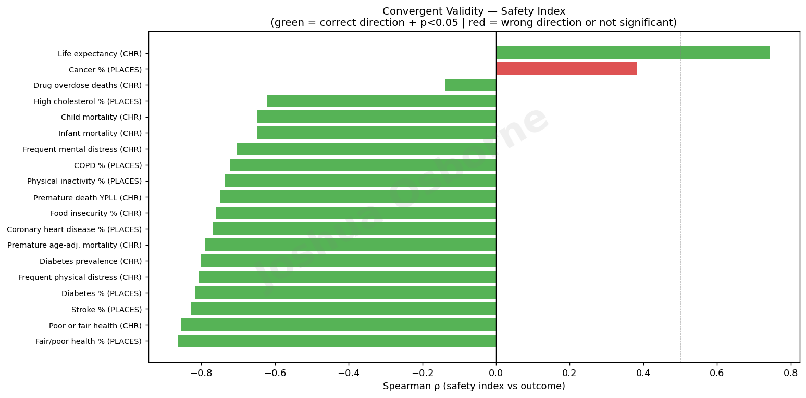
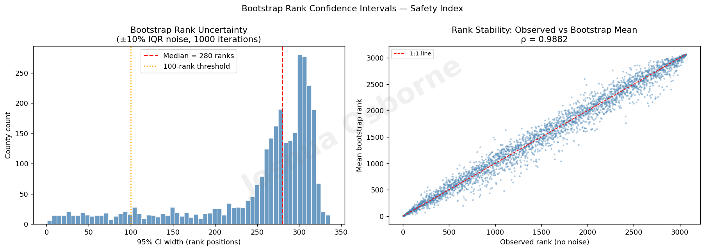
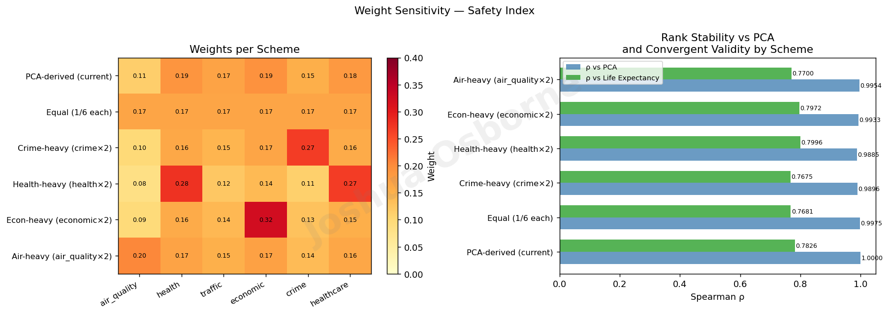
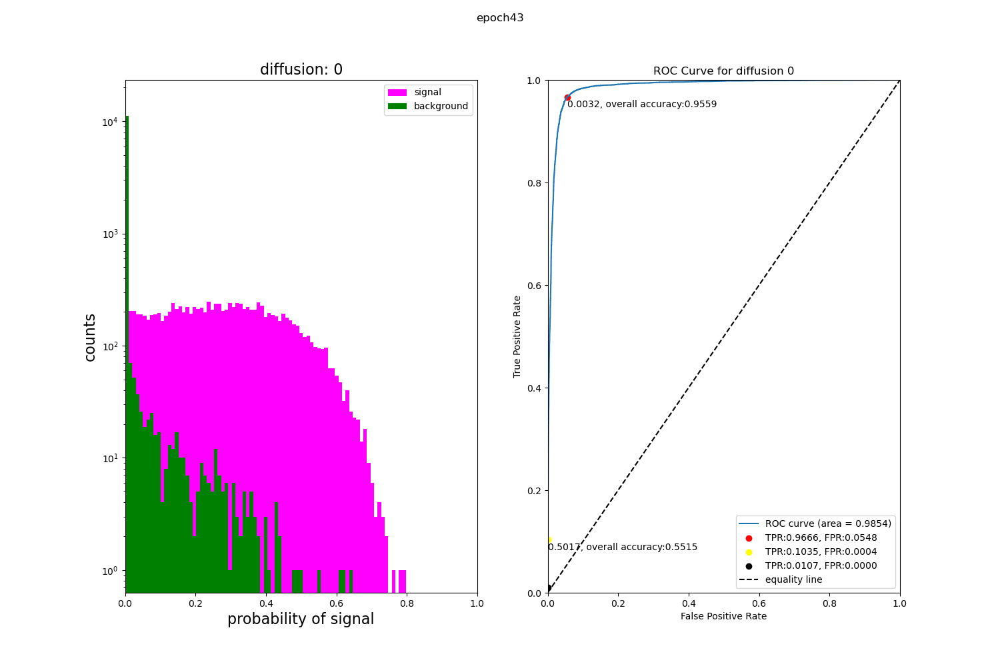

Applied Work
Projects




Statistics Notes
A growing collection of self-contained statistics and machine learning notes spanning probability theory, Bayesian inference, A/B testing, machine learning, and more. Each note covers intuition, formal definitions, step-by-step derivations, and worked examples, with simulation figures built from scratch in Python.





Urban Safety Atlas
FeaturedCounty-level risk profiling across 3,100+ US counties. Merges four federal datasets (EPA, CDC PLACES, NHTSA FARS, Census SAIPE) into a composite safety index. Applies K-Means and HDBSCAN clustering to surface distinct safety tiers, with a Streamlit choropleth dashboard featuring weight presets and county drill-down.
.png)
GRB Signal Identification
Bayesian framework for identifying astrophysical signal in noisy gamma-ray burst lightcurves; determines optimal time-bin widths to resolve genuine flux variations from background fluctuations. Analogous in spirit to the Bayesian Blocks algorithm; developed independently for targeted GRB pulse detection.

GNN Detection of Neutrinoless Double Beta Decay
ResearchGraph Neural Network classifier trained on 500K 3D point cloud events (100+ GB) to separate signal from background in neutrinoless double beta decay searches. Engineered radius-graph and k-NN graph topologies via torch-cluster, trained across 6 GPUs with early stopping, and achieved 0.97 AUC on a balanced dataset. Classification threshold optimised using Youden's J statistic.